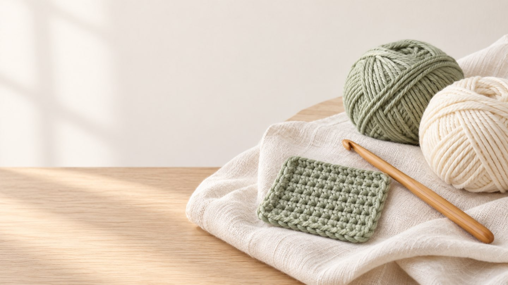
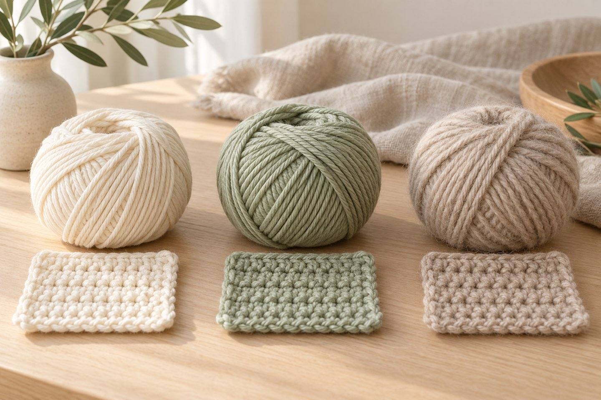
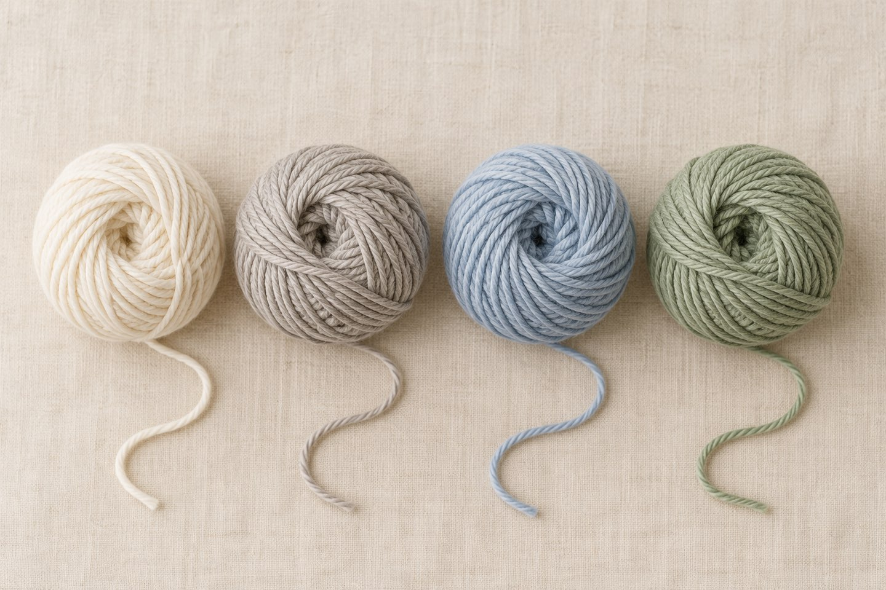
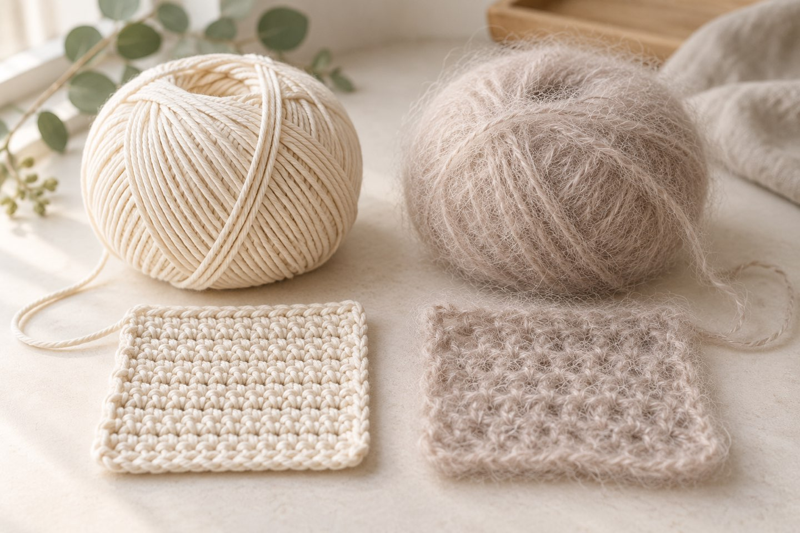
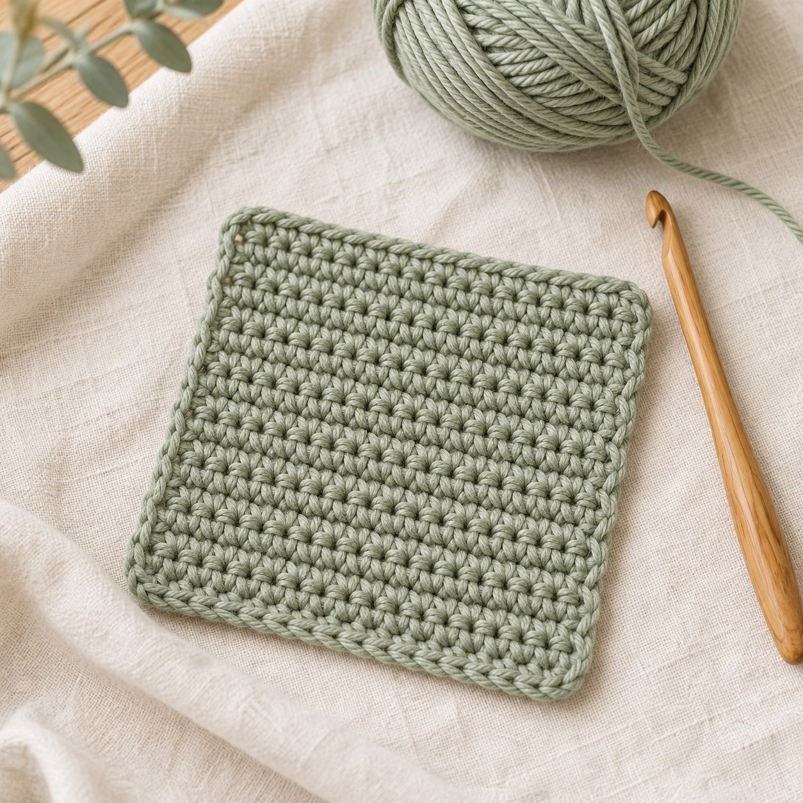
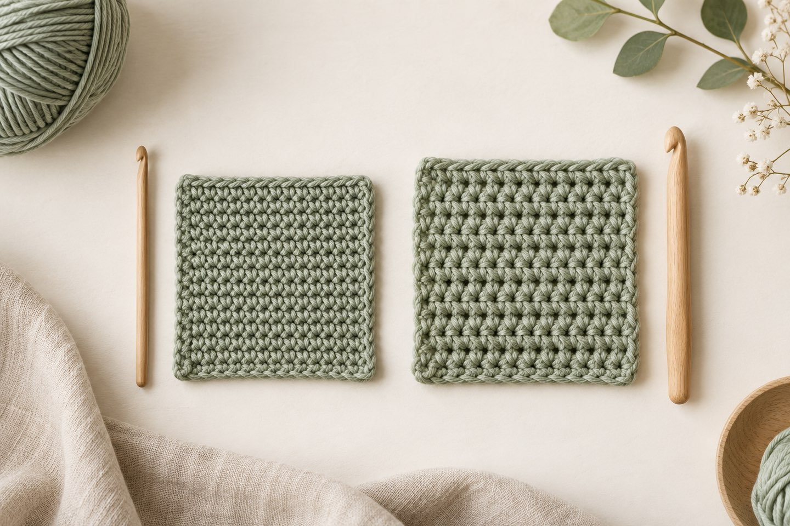

Which Yarn Should Crochet Beginners Use? How to Pick Your First Yarn – Plus a Free Yarn Test Swatch Pattern

In short
A good first yarn is smooth, evenly spun, medium weight and in a light to medium solid color – no fuzz, no texture, no variegation. Whether acrylic, cotton or wool is best depends on which source you ask; what matters is that you can see your stitches and that the yarn feels good in your hands. With the yarn test swatch below you can try any new yarn in half an hour.
The yarn shop is big, the choice is huge – and as a beginner it's hard to know where to start. I looked at what current beginner guides recommend and summarized it so you can pick a ball with confidence. One thing first: there is no single right yarn. But there are yarns that make learning easier.
1. What makes a good beginner yarn?
The guides agree on this: smooth, evenly spun and easy to see. Add a medium weight – the US sources talk about DK or worsted; see the label section below. Thin yarns need more finesse, and very thick ones can be awkward to handle.
2. Acrylic, cotton or wool: what's better for learning?

The sources don't fully agree here. So here's an overview of what each one mentions:
| Material | Mentioned advantages | Mentioned drawbacks |
|---|---|---|
| Acrylic | easy care, inexpensive, stretchy; mistakes are easy to frog; many light colors | can look less refined depending on quality |
| Cotton | smooth and firm, stitches are easy to see | has less give – some find it harder at first |
| Wool | smooth thanks to long fibers, easy to frog | can be scratchy or hand-wash only, depending on the type |
My tip: buy one inexpensive ball to practice with and see how it feels. Once you're comfortable, cotton is a nice choice for amigurumi and decor – firm, clear stitches speak for it.
3. Which color is best for learning?

You'll learn most easily with light to medium solid-color yarn: cream, light gray, pastel blue or a soft sage. On dark yarn (black, navy) and heavily variegated colors, stitches are hard to read until you can recognize them confidently.
- Cream
- Light gray
- Pastel blue
- Sage
4. What's on the yarn label?
The little paper band around the ball tells you the essentials: yardage/meterage (how much yarn per weight), the recommended hook size and the care instructions. One of the guides I read, for example, suggests smooth cotton yarn with about 125–130 m per 50 g (roughly 137–142 yd per 1.75 oz) and a 3–3.5 mm hook for beginners. That's an example, not a rule – every yarn has its own label. When you follow a pattern, use the yarn and hook it calls for, or a similar yarn, and make a swatch.
My tip: keep the label (a photo is enough). If you run out of yarn, you'll need the details to buy more.
5. What should you skip at first?

Fuzzy, heavily textured or very thin yarns are lovely – but they make stitches hard to see and hard to frog. Save them for later.
Pattern: Yarn test swatch

This small square lets you test any new yarn before starting a big project. You'll see how it crochets, how the stitches look and how big your fabric turns out. Afterwards it works as a coaster (best in cotton).
- Size
- depends on your yarn and hook – that's exactly what you're testing; measure the finished square
- Time
- about 30–45 minutes (a guide)
- Level
- Beginner
- Yarn
- one ball of the yarn you want to test
- Tools
- hook in the size on the label (often 3–4 mm), scissors, tapestry needle
Abbreviations (US terms)
ch = chain · sc = single crochet · turning chain = 1 ch at the start of a row (doesn't count as a stitch). All abbreviations are listed in the abbreviations guide.
Not sure about chains and single crochet yet? The crochet basics and the learning path walk you through it, and the stitch counter helps you count rows.
Swatch
- Ch 20.
- Row 1: sc in the 2nd ch from the hook, then sc in each remaining ch (19). Turn.
- Rows 2–20: ch 1 (turning chain), sc in each stitch (19). Turn. That's 20 rows in total.
- Check whether the piece is roughly square. If not, work a few more or fewer rows.
- Cut the yarn, pull it through the last loop, tighten and weave in both ends.
Your yarn check
- Can you see the stitches clearly?
- Does the hook slide easily through the stitches, or does the yarn catch?
- Does the yarn split or shed a lot of fuzz?
- How does the fabric feel – soft, firm, stiff?
- Frog the last three rows: does the yarn come undone easily?
Variation: crochet one swatch with each of two hook sizes and lay them side by side. You'll see how much the hook changes the look of the stitches.

More ideas
Once the swatch feels good, try a small project: my pumpkin pattern or the little crochet bear. For the season, the vintage ghost fits well – it only needs the magic ring, single crochet, increases and decreases.
Your turn! Which yarn did you start with? Tell me on Instagram or TikTok! 🧶
Frequently asked questions about beginner yarn
What is the best yarn for crochet beginners?
A smooth, evenly spun yarn in a medium weight and in a light to medium solid color. Beginner guides disagree on acrylic, cotton or wool – what matters is that you can see the stitches clearly.
Is acrylic or cotton better for learning?
Several guides call acrylic beginner-friendly because it is stretchy and mistakes are easier to fix. Others recommend smooth cotton because the stitches are easy to see, even though cotton has less give. The best approach is to try one inexpensive ball.
What color should my first yarn be?
Ideally light to medium and solid, for example cream, light gray, pastel blue or sage. Black, navy and heavily variegated yarns make stitches harder to recognize.
What is on a yarn label?
The label usually shows yardage or meterage, the recommended hook size and care instructions. Keep it or take a photo so you can buy more yarn later.
What can I do with the yarn test swatch?
You can use it as a coaster, especially if you crocheted it in cotton. Or keep it as a comparison piece to lay yarns side by side later.
Sources and inspiration
A summary of several beginner guides found through web search; the guides partly disagree (see the table).